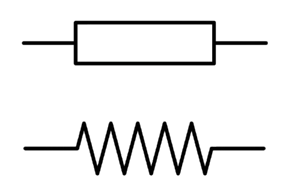
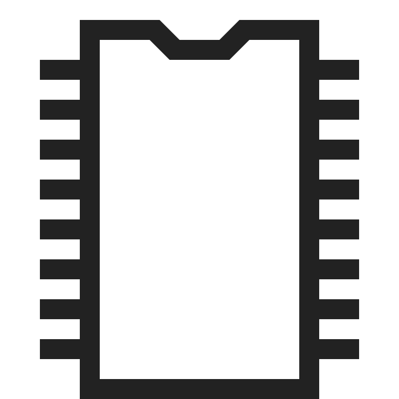

Dobrodošli u svijet elektronike
Istražite osnove elektronike kroz ključne komponente i logička kola.

Dioda
Osnovni poluprovodnički element, omogućava protok struje u jednom smjeru.
Otpornik
Ograničava protok struje i dijeli napon u električnim kolima.

Operacioni pojačavač
Analogni gradivni blok za pojačanje, sumiranje i obradu signala.

Logička kola
Osnova digitalne elektronike: AND, OR, NOT, NAND, NOR, XOR i XNOR.
Zašto učiti elektroniku?

Praktične vještine
Nauči kako stvarno projektovati kola i razumjeti njihovu funkciju u praksi.
Digitalna logika
Razumijevanje AND, OR, XOR i drugih logičkih funkcija u modernim uređajima.
Analogna elektronika
Pojačavači, dioda i otpornici – sve osnove za kreiranje analognih sklopova.